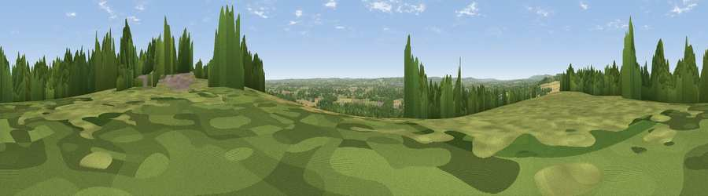

Viewpoint near Yalding
#19263 in England · top 14% of its area beats it · near YaldingWhere it is
The exact computed spot (TQ 70375 51375). Click the marker for map links.
The view, rendered

A 360° render of this exact spot computed from the terrain model, tree cover and land cover — summer colours, afternoon light, calibrated against photographs of famous viewpoints. Real trees, hedges and buildings will differ in detail.
The panorama
Grey silhouette: terrain skyline in each direction (720 bearings, Earth curvature and refraction included). Dashed green: skyline with trees (+15 m) and buildings (+8 m) as obstacles. Blue strip: how far the ground is visible on each bearing.
Where the view opens
Wedge length = distance to the farthest visible ground on that bearing (vegetation-aware). Rings at 10, 25 and 50 km.
What fills the view
42% grassland · 34% woodland · 18% cropland · 6% built-up
Angular shares of the visible panorama (visual magnitude), not map area. Landscape diversity 0.52 (0–1 Shannon).
Key numbers
More beautiful places nearby
The staircase of upgrades: each row has a higher view potential than everything closer. Driving times are estimates from straight-line distance, calibrated against real road routing — check an actual route before setting out.
| Place | Direction | Drive | Score |
|---|---|---|---|
| Viewpoint near Yalding | WNW · 0 km | ~1 min | 54.1 |
| Birchetts Hill | WNW · 3 km | ~8 min | 56.3 |
| Viewpoint near Boxley | NE · 11 km | ~20 min | 68.6 |
| Viewpoint near Shipbourne | W · 14 km | ~25 min | 69.1 |
| Viewpoint near Westwell | E · 28 km | ~44 min | 72.2 |
| Viewpoint near Fairlight | SSE · 42 km | ~62 min | 74.7 |
| Viewpoint near Fairlight | SSE · 42 km | ~62 min | 75.1 |
| Viewpoint near Fairlight | SSE · 43 km | ~63 min | 79.0 |
51.23612, 0.43916 · source: screening · position refined by local search. Computed location — check access rights before visiting.